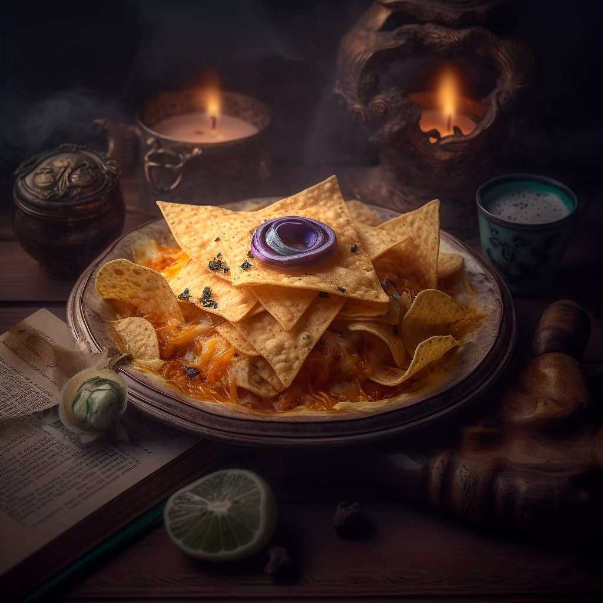

Beholder's Eye Dip

Description
Introducing 'Beholder's Eye Dip' a captivating Dungeons & Dragons-inspired
dip that will enchant your taste buds! This mystical concoction combines
creamy layers of tangy goat cheese, smoky roasted red peppers, and a hint
of fiery chili. Delicately sprinkled with crushed black olives,
it resembles the mesmerizing eye of a fearsome beholder. Dive into
this abyss of flavors with your favorite chips or veggies, and let the
gaze of the beholder transport you to a realm of culinary delight
Ingredients
- 1 cup sour cream
- 1/2 cup mayonnaise
- 1/4 cup diced red bell pepper
- 1/4 cup diced green bell pepper
- 1/4 cup diced black olives
- 1/4 cup diced green onions
- 1 teaspoon garlic powder
- Salt and pepper to taste
Steps
- In a bowl, mix together sour cream and mayonnaise until well combined.
- Add diced red bell pepper, green bell pepper, black olives, green onions,
garlic powder, salt, and pepper.
- Stir until all ingredients are evenly distributed.
- Cover the bowl and refrigerate for at least 1 hour to allow the flavors to
meld together.
- Serve the dip with an assortment of vegetable sticks, crackers, or
tortilla chips.